Ceramics courses and workshops in Turin and around
Ceramics, wheel throwing, hand building, decoration and kintsugi courses in Turin, Cuneo and around: dates, prices and how to sign up.
Search all workshops77 activities coming up · updated on 12 November 2026
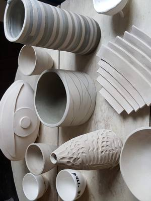
fri6novCeramicsMake your mug: a workshop with Rudfrom Friday 6 November to Sunday 29 November, 10:00–12:00San Salvario (TO) · 48 €with Rud at Pottery Lab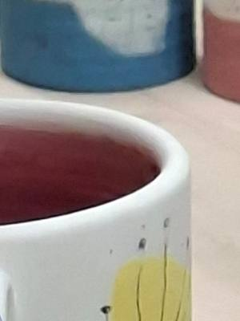
thu12novCeramicsPaint ceramics: free decoratingThursday 12 November, 16:00–21:00Turinwith Spazio IAIA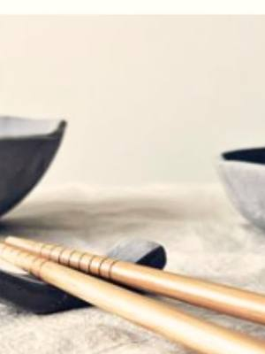
fri13novCeramicsSushi set: clay plates and bowlFriday 13 November, 18:30–20:30Vanchiglia (TO) · 40 €with Il Nicchio di via Monti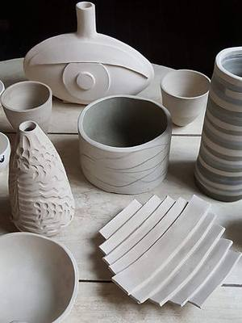
fri13novCeramicsAperipottery: slabs and coilsFriday 13 November, 18:30–20:30San Salvario (TO)with Pottery Lab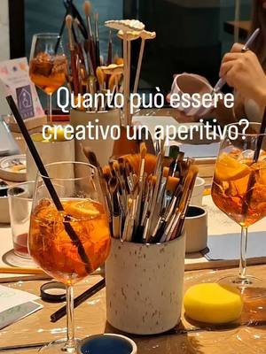
fri13novCeramicsSpritz and Pottery: aperitivo and ceramicsFriday 13 November, 18:30–21:00Turinwith Spazio IAIA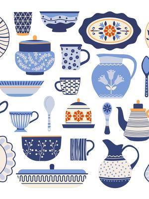
sat14novCeramicsGiving Shape: ceramics and psychotherapySaturday 14 November, 09:30–11:30San Salvario (TO)with Pottery Lab with Stefania Barbagallo e Marta Pais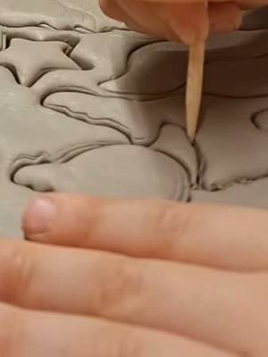
sat14novCeramicsMake your wreath: stoneware slab workSaturday 14 November, 10:00–12:30Turinwith Laros at Spazio IAIA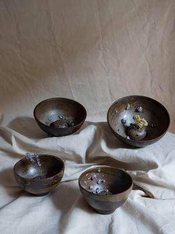
sat14novCeramicsMake your gift: a ceramic pieceSaturday 14 November, 10:30–12:30Borgo Vittoria (TO) · Pay what you likewith Giada Biagioni Ceramiche sat14novCeramicsChristmas in ceramics: decorations and giftsSaturday 14 November, 10:30–12:30Pinerolo (TO) · 80 €with Elisa Sasso at NODO Concept Space
sat14novCeramicsChristmas in ceramics: decorations and giftsSaturday 14 November, 10:30–12:30Pinerolo (TO) · 80 €with Elisa Sasso at NODO Concept Space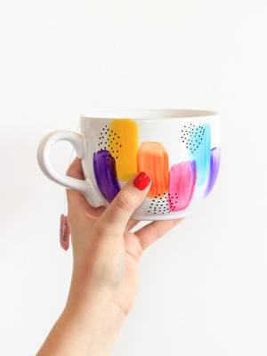
sat14novCeramicsDecoration workshop with MartaSaturday 14 November, 13:00–15:30San Salvario (TO) · 48 €with Marta Pais at Pottery Lab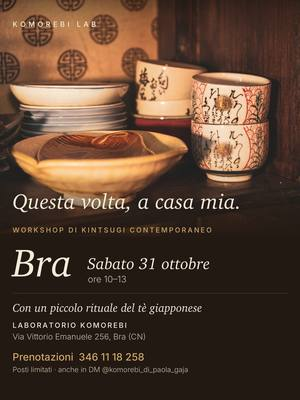
sat14novCeramicsKintsugi in Cherasco: repairing with goldSaturday 14 November, 15:00–18:00Cherasco (CN)with Komorebi Lab with Il Sole a Mezzanotte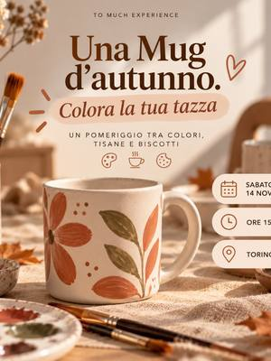
sat14novCeramicsAn autumn mug: paint your ownSaturday 14 November, 15:30Turin · 27 €with TO much experience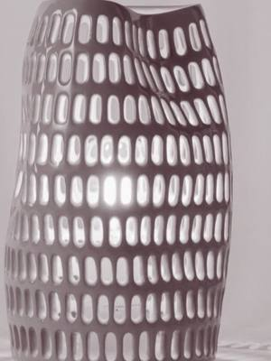
sat14novCeramicsPottery Workshop: pierced lanternfrom Saturday 14 November to Saturday 21 November, 18:00–20:30Cuneo (CN)with Gioie di Creta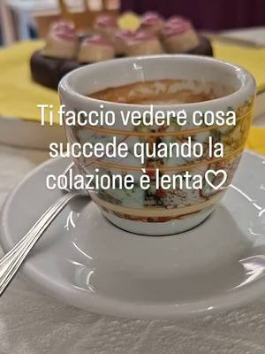
sun15novCeramicsCoffee and Pottery: breakfast and ceramicsSunday 15 November, 10:00–12:00Turin · 25 €with Spazio IAIA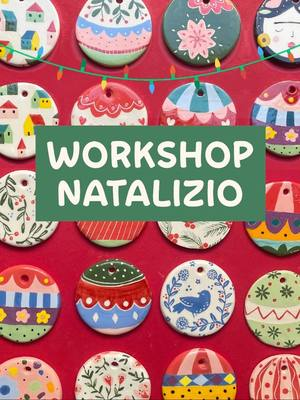
sun15novCeramicsChristmas decorations: ceramic tree ornamentsSunday 15 November, 10:30–12:00San Salvario (TO) · 40 €with Studio Biscotto- sun15novCeramicsDecorate your Christmas: festive ceramicsSunday 15 November, 13:30–15:30San Salvario (TO) · 25 €with Pottery Lab
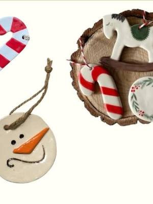
sun15novCeramicsChristmas decorations: clay ornamentsSunday 15 November, 16:00–18:00Vanchiglia (TO) · from 20 €with Il Nicchio di via Monti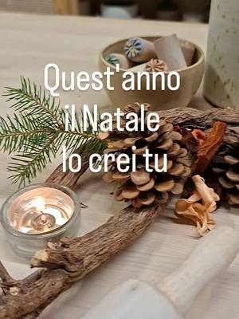
sun15novCeramicsChristmas Workshop: ceramic decorationsSunday 15 November, 16:00–22:00Turin · 20 € per hourwith Spazio IAIA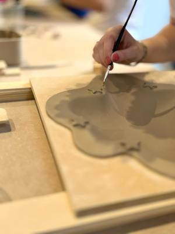
mon16novCeramicsMake your own plate: bowls and trinket traysMonday 16 November, 18:00–20:00San Salvario (TO) · 48 €with Pottery Lab with Roberta- wed18novCeramicsPaint & Taste: ceramics and pizzaWednesday 18 NovemberSan Salvario (TO) · 39 €with Aperi Pods
 from18novCeramicsCeramics course: wheel or hand-buildingfrom Wednesday 18 November to Tuesday 22 DecemberAurora (TO) · 100 € for 4 sessionswith Aquarius Ceramica
from18novCeramicsCeramics course: wheel or hand-buildingfrom Wednesday 18 November to Tuesday 22 DecemberAurora (TO) · 100 € for 4 sessionswith Aquarius Ceramica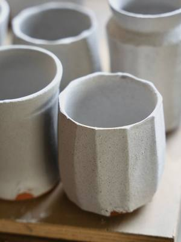
from11novCeramicsCeramics course: from sketch to clayfrom Wednesday 11 November to Wednesday 16 December, every Wednesday, 18:30–20:30Cuneo (CN) · 180 € for 6 lessonswith Mario Ghibaudo at Atelier Crea-Arti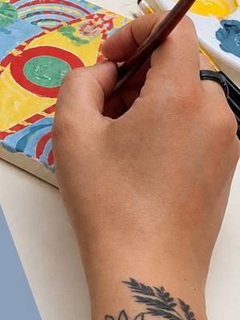
thu19novCeramicsOracle pottery: oracle cards and an amuletThursday 19 November, 19:00–21:00Turinwith Paola Zotta at Spazio IAIA- fri20novCeramicsSpritz and Pottery: aperitivo and ceramicsFriday 20 November, 18:30–21:00Turinwith Spazio IAIA
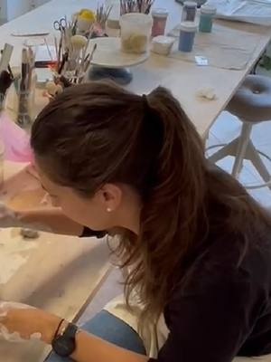
sat21novCeramicsBreakfast and ceramics: morning in the studioSaturday 21 NovemberManta (CN) · 60 €with Laboratorio di Ceramica a Manta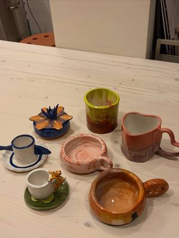
sat21novCeramicsArgilla Rituale: an incantation bowlSaturday 21 NovemberVanchiglia (TO) · 45 €with Maccu at Maniera Factory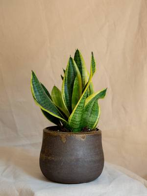
sat21novCeramicsMake your gift: a ceramic pieceSaturday 21 November, 10:30–12:30Borgo Vittoria (TO) · Pay what you likewith Giada Biagioni Ceramiche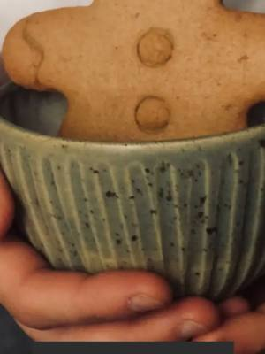
sat21novCeramicsCeramics workshop: stoneware tea setSaturday 21 November, 14:30–17:00Vanchiglietta (TO)with QB Creazioni sat21novCeramicsClay for everyone: your first pieceSaturday 21 November, 15:00–17:00Santa Rita (TO)with Rossella Eula at Anima Atelier
sat21novCeramicsClay for everyone: your first pieceSaturday 21 November, 15:00–17:00Santa Rita (TO)with Rossella Eula at Anima Atelier sat21novCeramicsTillandsia: hanging ceramic plantersSaturday 21 November, 16:00–18:00San Salvario (TO) · 48 €with Pottery Lab
sat21novCeramicsTillandsia: hanging ceramic plantersSaturday 21 November, 16:00–18:00San Salvario (TO) · 48 €with Pottery Lab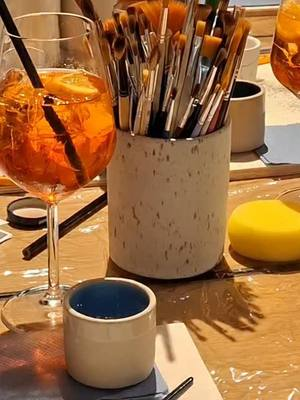
sat21novCeramicsCeramic aperitivo: Christmas baublesSaturday 21 November, 19:00–21:30Grugliasco (TO) · 35 €with Spazio IAIA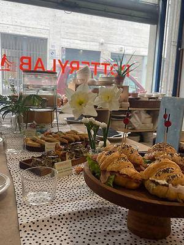
sun22novCeramicsPottery Brunch: clay and brunchSunday 22 November, 09:30–11:30San Salvario (TO) · 55 €with Pottery Lab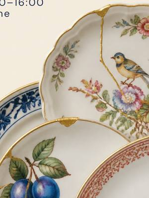
sun22novCeramicsKintsugi workshop: vintage porcelainSunday 22 November, 10:00–12:00Turinwith Komorebi Lab at ArtTo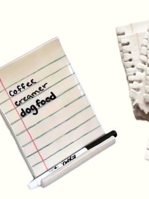
mon23novCeramicsFoglietto: a ceramic memo magnetMonday 23 November, 18:30–20:30Vanchiglia (TO) · 40 €with Il Nicchio di via Monti- tue24novCeramicsClay for everyone: your first pieceTuesday 24 November, 15:00–17:00Santa Rita (TO)with Rossella Eula at Anima Atelier
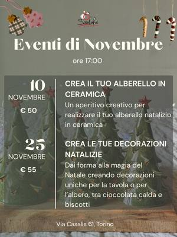
wed25novCeramicsChristmas workshop: ceramic decorationsWednesday 25 November, 17:00Cit Turin (TO) · 55 €with Scialabà wed25novCeramicsKintsugi jewellery workshop: an Asian tea breakWednesday 25 November, 18:30–20:30Centro (TO) · 55 €with Hanami Design
wed25novCeramicsKintsugi jewellery workshop: an Asian tea breakWednesday 25 November, 18:30–20:30Centro (TO) · 55 €with Hanami Design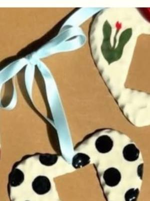
wed25novCeramicsPhoto frames: three ceramic framesWednesday 25 November, 18:30–20:30Vanchiglia (TO) · 40 €with Il Nicchio di via Monti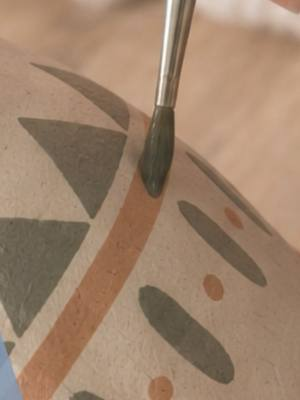
thu26novCeramicsPaint ceramics: free decoratingThursday 26 November, 16:00–21:00Turinwith Spazio IAIA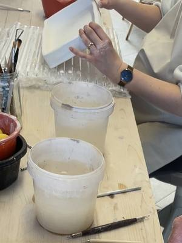
fri27novCeramicsAperitivo and ceramics: evening in the studioFriday 27 NovemberManta (CN) · 60 €with Laboratorio di Ceramica a Manta- fri27novCeramicsAperipottery: slabs and coilsFriday 27 November, 18:30–20:30San Salvario (TO)with Pottery Lab
- fri27novCeramicsSpritz and Pottery: aperitivo and ceramicsFriday 27 November, 18:30–21:00Turinwith Spazio IAIA
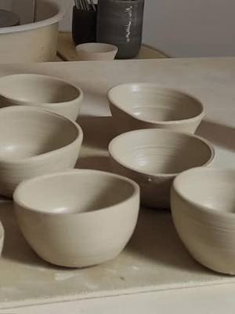
sat28novCeramicsWheel workshop: throwing multiplesSaturday 28 NovemberSan Donato (TO)with Chu Lab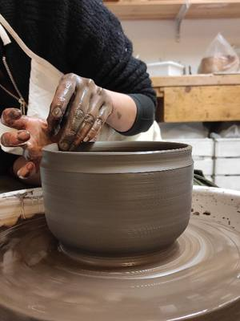
sat28novCeramicsWheel Full Immersion: four hours at the wheelSaturday 28 NovemberSan Donato (TO)with Chu Lab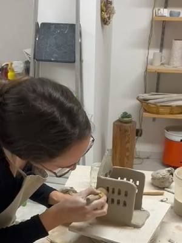
sat28novCeramicsBreakfast and ceramics: morning in the studioSaturday 28 NovemberManta (CN) · 60 €with Laboratorio di Ceramica a Manta- sat28novCeramicsArgilla Rituale: boliSaturday 28 NovemberVanchiglia (TO) · 45 €with Maccu at Maniera Factory
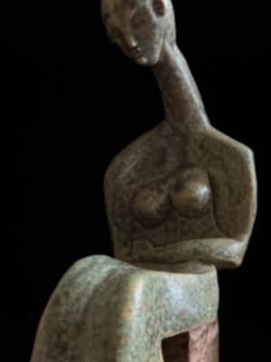
sat28novCeramicsSculpting the clouds: clay sculptureSaturday 28 November, 10:00–12:30San Salvario (TO) · 50 €with Ermanno Cirulli at Pottery Lab sat28novCeramicsKintsugi experience: mending with goldSaturday 28 November, 14:30–18:30San Salvario (TO) · 120 €with Pottery Lab with Diletta
sat28novCeramicsKintsugi experience: mending with goldSaturday 28 November, 14:30–18:30San Salvario (TO) · 120 €with Pottery Lab with Diletta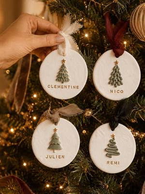
sat28novCeramicsCeramics workshop: Christmas decorationsSaturday 28 November, 14:30–18:30Villar Perosa (TO) · 60 €with Simona di Terraferma Ceramiche at Riflessi di Casa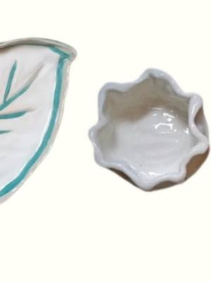
sat28novCeramicsAperilla: a clay aperitivo setSaturday 28 November, 17:00–19:00Vanchiglia (TO) · 40 €with Il Nicchio di via Monti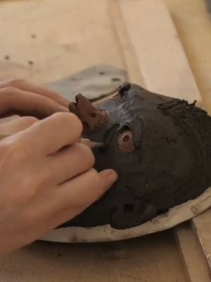
sun29novCeramicsClay mask: an animal characterSunday 29 November, 10:30–12:30Borgo Vittoria (TO) · 55 €with Giada Biagioni Ceramiche sun29novCeramicsJewellery workshop: kintsugi on ceramicsSunday 29 November, 11:00–13:00Santa Rita (TO)with Hanami Design at Anima Atelier
sun29novCeramicsJewellery workshop: kintsugi on ceramicsSunday 29 November, 11:00–13:00Santa Rita (TO)with Hanami Design at Anima Atelier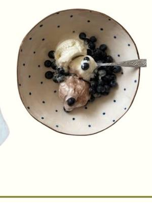
sun29novCeramicsFree Clay: a bowl in an hourSunday 29 November, 14:30–18:30Vanchiglia (TO) · 25 €with Il Nicchio di via Monti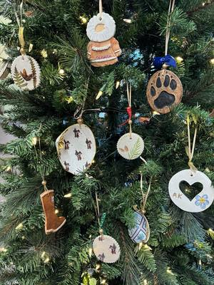
sun29novCeramicsCeramics workshop: Christmas ornamentsSunday 29 November, 16:00San Donato (TO)with Chu Lab- sun29novCeramicsChristmas Workshop: ceramic decorationsSunday 29 November, 16:00–22:00Turin · 20 € per hourwith Spazio IAIA
 sun29novCeramicsKintsugi jewellery workshop: a golden pieceSunday 29 November, 16:30–18:30Pianezza (TO) · 55 €with Hanami Design
sun29novCeramicsKintsugi jewellery workshop: a golden pieceSunday 29 November, 16:30–18:30Pianezza (TO) · 55 €with Hanami Design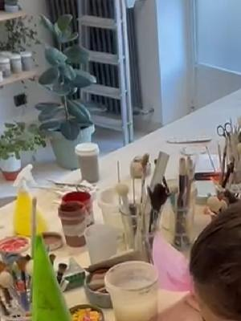
fri4decCeramicsAperitivo and ceramics: Christmas eveningFriday 4 DecemberManta (CN) · 60 €with Laboratorio di Ceramica a Manta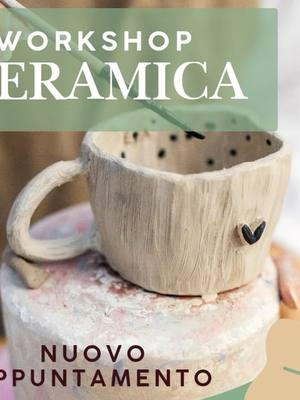
fri4decCeramicsCeramics workshop: slab-built mugFriday 4 December, 18:30Borgaro Torinese (TO) · 45 €with Nikin House dateTBDOtherCascina Roccafranca: this season’s coursesDate TBDMirafiori (TO)with Cascina Roccafranca
dateTBDOtherCascina Roccafranca: this season’s coursesDate TBDMirafiori (TO)with Cascina Roccafranca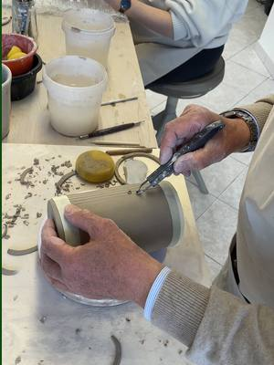
dateof your choiceCeramicsCeramics lessons: at your own paceDate of your choiceManta (CN) · 125 € for 4 lessonswith Laboratorio di Ceramica a Manta dateof your choiceCeramicsPrivate modelling courses: ceramicsDate of your choiceVanchiglia (TO)with Maccu at Maniera Factory
dateof your choiceCeramicsPrivate modelling courses: ceramicsDate of your choiceVanchiglia (TO)with Maccu at Maniera Factory- dateof your choiceCeramicsWheel throwing: one-to-one lessonsDate of your choiceVanchiglia (TO) · 45 € per lessonwith Ceramiche Musso at Maniera Factory
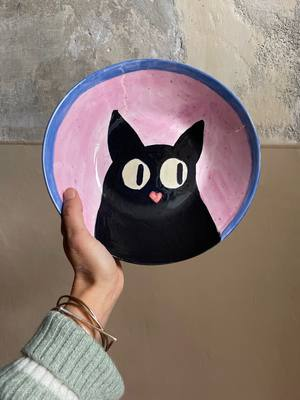
dateof your choiceCeramicsFree ceramic painting: pick and decorateDate of your choiceVanchiglia (TO) · from 15 €with Naïf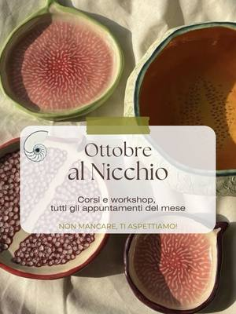
dateof your choiceCeramicsCeramics course: modelling and glazingDate of your choiceVanchiglia (TO) · 120 € for 4 lessonswith Il Nicchio di via Monti- dateof your choiceCeramicsWheel-throwing course: lessons for twoDate of your choiceVanchiglia (TO) · 45 € per lessonwith Il Nicchio di via Monti
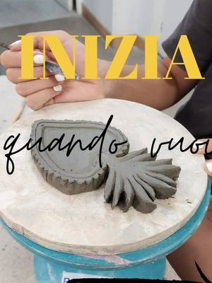
dateof your choiceCeramicsCeramics courses: wheel and hand buildingDate of your choiceSan Salvario (TO)with Openlab573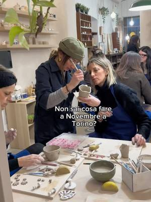
dateTBDCeramicsCeramics workshop: modelling and engobesDate TBDQuadrilatero (TO) · 50 € · sold outwith Ouimiel Studio dateof your choiceCeramicsThe tree of life: terracotta sculptureDate of your choiceSan Salvario (TO) · 95 €with Pottery Lab with Marta Pais
dateof your choiceCeramicsThe tree of life: terracotta sculptureDate of your choiceSan Salvario (TO) · 95 €with Pottery Lab with Marta Pais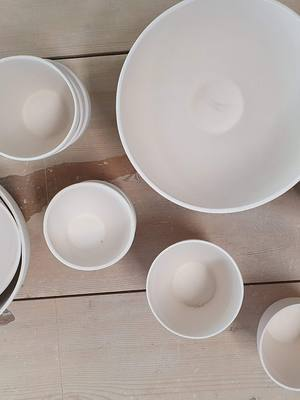
dateof your choiceCeramicsOpen studio: ceramics on your ownDate of your choiceSan Salvario (TO) · 50 € for 10 hourswith Pottery Lab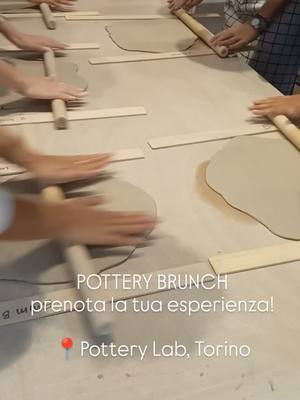
dateof your choiceCeramicsHand-building course: slab and coilEvery week, in several sessionsSan Salvario (TO) · 150 € for 4 lessonswith Pottery Lab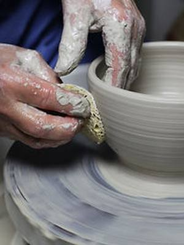
dateof your choiceCeramicsWheel-throwing course: four sessionsEvery Tuesday, Wednesday, Thursday or SaturdaySan Salvario (TO) · 150 € for 4 lessonswith Pottery Lab with Roberta Dalpasso- dateof your choiceCeramicsCeramic decoration course: painted potteryDate of your choiceCit Turin (TO)with Scialabà
 dateof your choiceCeramicsJewellery course: porcelain and clayDate of your choiceCit Turin (TO) · 125 €with Scialabà
dateof your choiceCeramicsJewellery course: porcelain and clayDate of your choiceCit Turin (TO) · 125 €with Scialabà- dateof your choiceCeramicsCeramics course: slab building and wheelDate of your choiceCit Turin (TO) · 120 €with Scialabà
- dateof your choiceCeramicsWheel-throwing course: centring and formsDate of your choiceCit Turin (TO) · 120 €with Scialabà
- everythuCeramicsFive o’clock tea: decorate a mugEvery Thursday, 17:00–18:30San Salvario (TO) · 25 €with Pottery Lab with Diletta
- dateof your choiceCeramicsWheel-throwing course: all levelsEvery Monday and Wednesday, 18:30–20:30San Donato (TO)with Chu Lab